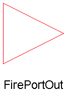

ModelicaAdditions.PetriNets.Interfaces.FirePortOut
connector FirePortOut "FirePort with output icon" extends FirePort; end FirePortOut;
ModelicaAdditions.PetriNets.Interfaces.SetPortIn

connector SetPortIn "SetPort with input icon" extends SetPort; end SetPortIn;
ModelicaAdditions.PetriNets.Interfaces.FirePortIn
connector FirePortIn "FirePort with input icon" extends FirePort; end FirePortIn;
ModelicaAdditions.PetriNets.Interfaces.SetPortOut

connector SetPortOut "SetPort with output icon" extends SetPort; end SetPortOut;
ModelicaAdditions.PetriNets.Interfaces.FirePortconnector FirePort Boolean state "State of connected place"; Boolean fire "True, if transition fires"; end FirePort;
ModelicaAdditions.PetriNets.Interfaces.SetPortconnector SetPort Boolean state "State of connected place"; Boolean set "True, if transition fires"; end SetPort;